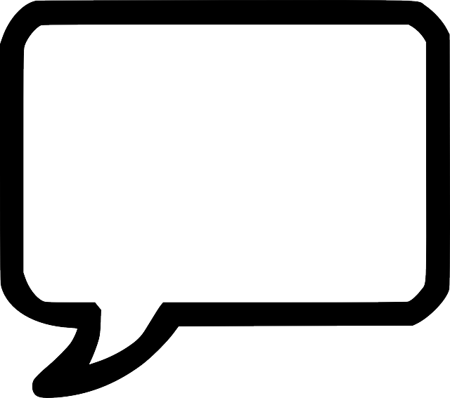
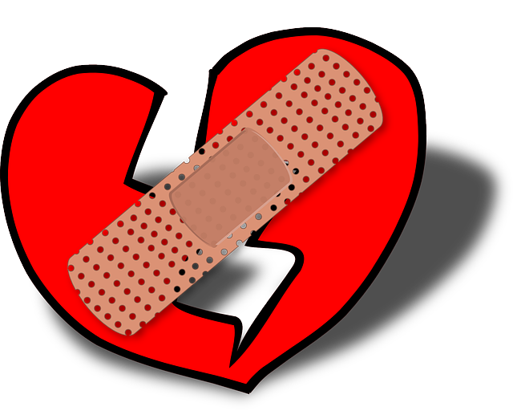

댓글 예절1. 댓글예절이란?댓글을 쓰면서 지켜야할 예절들을 말한다.
2. 댓글 예절을 지켜야 하는 까닭댓글 예절을 지켜야 하는 이유는 댓글 예절을 지키지 않으면 사람들이 그 댓글에 상처를 입고 피해가 발생하기 때문이다.
댓글 예절을 지키는 행동
1. 댓글을 쓰기 전에 올바른 말인지 생각하고 쓴다.
2. 댓글을 쓸 때 항상 역지사지하면서 쓴다.
배경사진 출처 : http://www.bloter.net/archives/188405
돌아가기